Mes notes du RC3 2020
Cette année (décembre 2020), j'avais un billet pour le RC3. Ils étaient distribués gratuitement, mais se sont épuisés rapidement. J'étais donc fier et j'ai passé pas mal de temps à regarder les sessions du CCC.
Toutes les conférences sont disponibles ici. J'en ai regardé certaines (en partie ou en entier).
En plus des conférences, il y avait un Monde 2D - qui n'a jamais fonctionné pour moi 😢 (et pourtant ma connexion réseau était plutôt bonne !) :
Une introduction à Tox
Un nouveau service de messagerie. Mieux que l'email, Matrix et toutes les autres plateformes de messagerie. Avantages :
- Pas de serveurs centraux, aucune possibilité de désactiver les fonctionnalités de chiffrement.
- Fonctionnalités de Tox : Messagerie instantanée, Appels vocaux, Appels vidéo, Partage d'écran, Partage de fichiers, Groupes.
Il était intéressant d'apprendre qu'il existe de NOMBREUX protocoles de chat. Et beaucoup d'entre eux ont des objectifs similaires : Garder les données sécurisées, et parfois même les métadonnées. Il semble qu'il faille décider si votre protocole cache vraiment les métadonnées (généralement cela se fait en utilisant Tor en dessous) ou s'il offre une faible latence pour permettre également la voix et la vidéo.
Questions qui me viennent à l'esprit :
- Fournit-il réellement des appels vidéo, ou lance-t-il simplement d'autres appels vidéo (par exemple Jitsi) - comme le fait Matrix ?
- Les appels vocaux et vidéo sont-ils vraiment chiffrés ? Car Cisco Webex ne chiffre pas ses appels vidéo (seulement les chats)
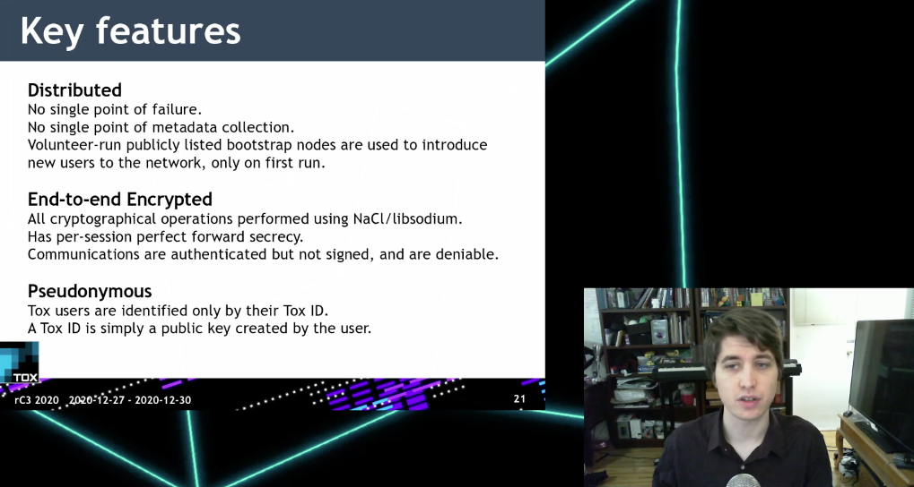
À propos du gars :
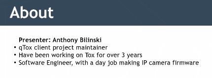
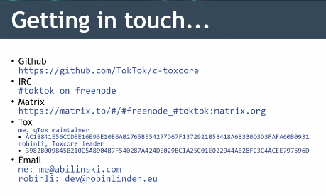
Der netzpolitische Wetterbericht
Écouté en direct, par Markus Beckedahl (de netzpolitik.org)
Qu'est-ce qui s'est passé l'année dernière, quels sujets sont brûlants ?
- Les gouvernements veulent des clés pour écouter les communications chiffrées.
- Les chevaux de Troie d'État exploitent des failles de sécurité - au lieu de les corriger rapidement.
- Les appareils SmartHome ont été convoqués comme témoins devant le tribunal : Alexa a raconté ce qu'on lui avait demandé.
- La loi BND a été classée comme inconstitutionnelle - belle expérience 😀. Mais une nouvelle loi BND a été rapidement adoptée...
- Le podcast avec Idil Baydar - un peu cru mais assez intéressant, globalement recommandable.
J'ai ensuite arrêté, c'était assez ennuyeux...
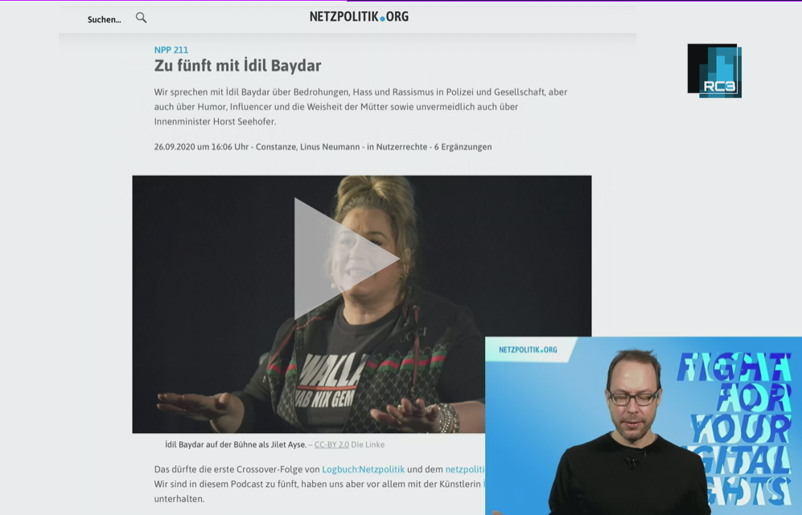
Intégrité numérique de la personne humaine, un nouveau droit fondamental mise à jour 2020
Le gars (Alexis Roussel, Suisse) explique comment les droits de l'homme devraient / pourraient être étendus à l'espace numérique.
Quelques points intéressants qu'il a soulevés :
- Il y a un bug dans le RGPD (Article 2) : Le gouvernement peut accéder à toutes les données en cas de danger. Description trop vague et qui brise l'idée de base du RGPD.
- En Suisse, certains cantons mettent à jour leur Constitution pour l'étendre à l'espace numérique.
Je suis resté seulement 15 minutes, je n'ai pas écouté jusqu'à la fin...
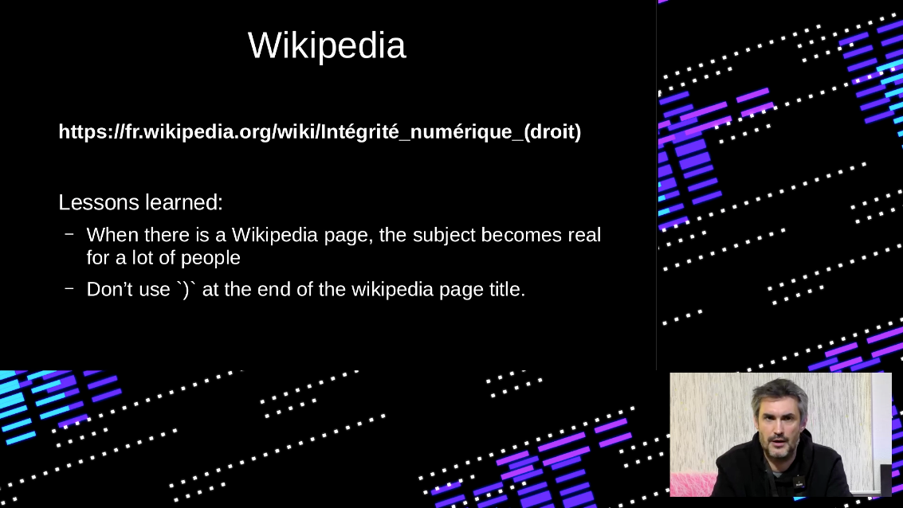
Les blocs de construction de la décentralisation
Le gars qui parle est Will Scott. Il semble être un gars d'IPFS.
- Actuellement, le plus grand système décentralisé est BitTorrent
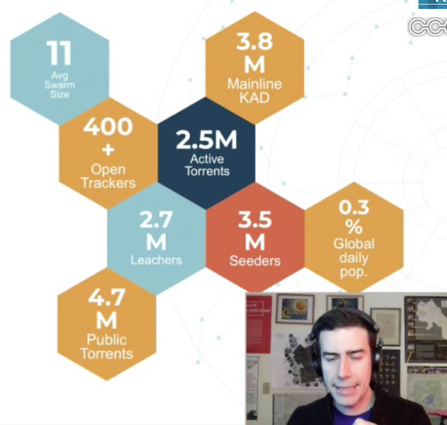
- Un autre grand système distribué est Mastodon "Le Fediverse". Qu'est-ce que c'est que ça ?
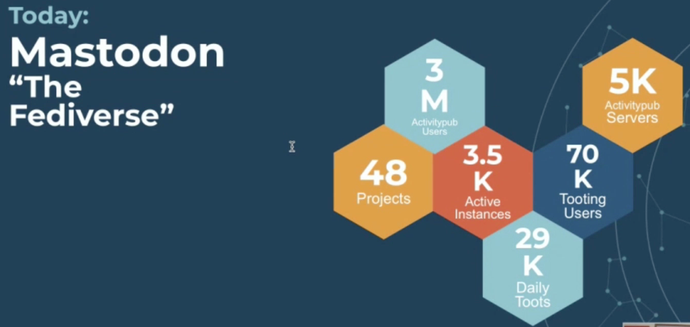
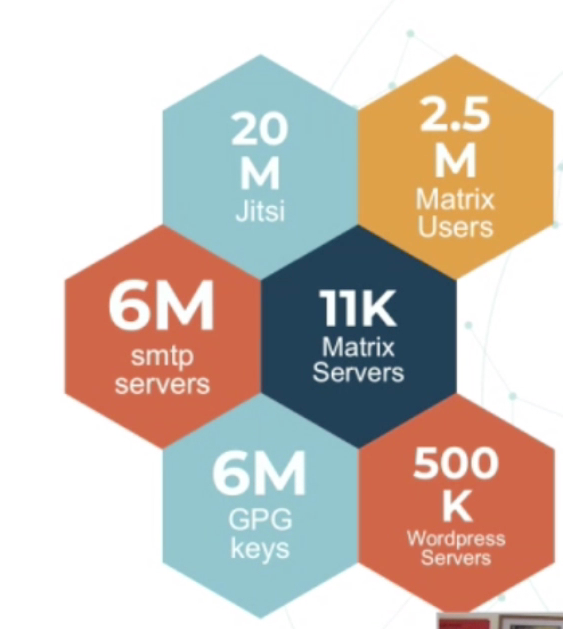
- IPFS a dépassé 2M d'utilisateurs
- SSB (Secure Scuttlebutt) 100K utilisateurs
- Bitcoin : 1M de comptes actifs
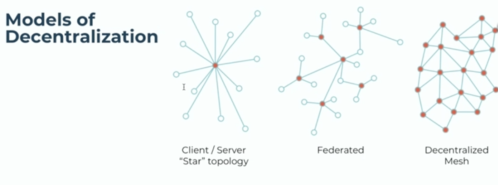
- Centralisé : Facebook. Fédéré : matrix. Maillage décentralisé ?
Les véritables blocs de construction de la décentralisation :
- DHT : Tables de hachage distribuées
- BFT (Tolérance aux pannes byzantines) Consensus. Il semble y avoir une explication ici.
- Le consensus peut être atteint par Proof of Work ou par Proof of Stake.
Il a ensuite discuté des limitations de ces blocs de construction : Volume, nombre d'entités, combien de sauts --> latence, bande passante (surtout en upload par rapport au download),
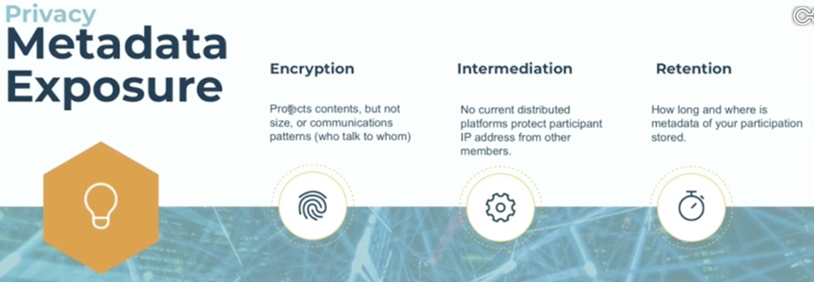
Autres conférences...
...que j'aimerais écouter :
- Gestion de projets avec Gitea : Après la vente de Github à Microsoft, beaucoup se sont demandé s'il n'existait pas d'alternatives sur lesquelles on a un contrôle total. J'utilise depuis deux ans l'application Go Gitea à la fois pour des projets professionnels et Open Source. Gitea a l'avantage que les obstacles pour l'installation, la maintenance et l'utilisation sont clairs et rapidement surmontables. Remarque : J'ai essayé le lien le 28.12.20, il semblait incorrect, il parlait de tout autres sujets (intéressant aussi : Internationaly Netzpolitik)
- Salle de classe numérique : Dans cet atelier, les enseignants, élèves et autres intéressés peuvent découvrir les logiciels scolaires libres. BigBlueButton ? Moodle ? Nextcloud ? Ce sont les salles de classe numériques de l'avenir.
- Ouverture du rC3
Et c'était mon programme pour le jour 3 (mardi 29 décembre) :
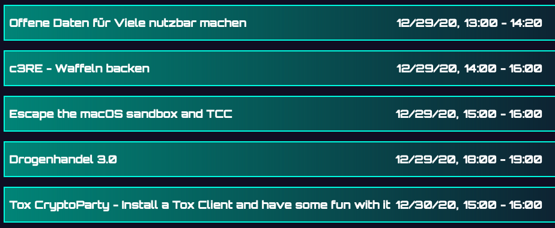